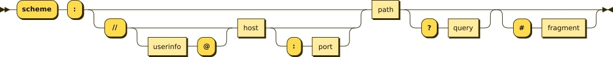

History of the World Wide Web
The World Wide Web was invented in 1989 by Tim Berners-Lee.
He wrote the first web browser in 1990 while employed at CERN near Geneva, Switzerland.
The browser was released outside CERN in 1991, first to other research institutions starting in January 1991 and to the general public on the Internet in August 1991.
General introduction to URL
A uniform resource locator (URL) is a reference to a resource on the Web that specifies its location and a mechanism for retrieving it.
URLs are commonly used to reference web pages (HTTP/HTTPS), but also for file transfer (FTP), email (mailto), and other applications.
A typical URL includes a protocol, a hostname, and a file name.
URL Syntax
A URL is composed of several parts, each of which has its own meaning and purpose.
The syntax of a URL is as follows:
protocol://hostname:port/path/filename

Fragment identifiers are used to identify a portion of a document, and query strings are used to pass data to the server.
Example: http://www.example.com/index.html?name=John#section1